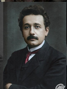

Durante mi adolescencia, la familia se mudó a Múnich, donde asistí al gimnasio Luitpold. Allí, mis intereses se diversificaron; leía a Kant y disfrutaba de la música, especialmente del violín. No obstante, las estrictas normas del sistema educativo alemán me resultaban opresivas. A los 15 años, decidí abandonar la escuela y me mudé a Italia con mi familia. Fue un momento liberador, donde pude explorar mis ideas y reflexiones sobre la física, lo que eventualmente me llevaría a estudiar en el Politécnico de Zúrich.